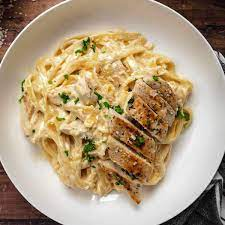

Description
Chicken Alphredo features pasta drenched in a creamy sauce,
topped with juicy strips of seared chicken
Ingridients
- 2 chicken breasts
- 2 tsp Italian seasoning
- 1 tbsp cooking oil
- 2 tbsp butter
- 4 cloves of minced garlic
- 1 cup heavy cream
- 3/4 cups grated parmesan
- 1/4 tsp salt
- 1/4 tsp pepper
- (optional) 1 tbsp chopped parsley
- 230 ml fettuccine
Steps
- Season both sides of the chicken breast with Italian seasoning and a pinch of salt.
- Heat a large skillet over medium. Once hot, add the cooking oil and swirl to coat the surface.
Add the chicken to the skillet and cook for about 7-8 minutes on each side, or until browned on the outside and cooked through.
- Remove the chicken to a clean plate and turn the heat under the skillet down to medium-low.
- Add the butter and minced garlic to the skillet. Stir and cook the garlic in the melted butter for about two minutes,
dissolving the browned bits from the bottom of the skillet as you stir.
- Add the heavy cream and whisk to combine, dissolving any remaining browned bits. Allow the cream to come up to a simmer.
- While waiting for the cream to simmer, bring a pot of water to a boil for the fettuccine. Once boiling,
add the pasta and continue to boil until tender (about 7 minutes).
Reserve about ½ cup of the starchy cooking water just before draining the pasta.
- Once the cream is simmering, add the grated Parmesan to the skillet.
Continue to whisk and stir until the Parmesan has melted into the sauce and the sauce has begun to simmer.
Simmer the sauce for a few minutes, or until it becomes slightly thicker. Add salt and pepper to the sauce to taste.
- Add the drained pasta to the skillet with the creamy sauce and toss to combine.
If the sauce becomes too thick, add a couple of tablespoons of the reserved pasta water and toss to combine with the sauce.
- Slice the cooked chicken breasts and serve it atop the creamy pasta. Garnish with chopped parsley, if desired.
go back